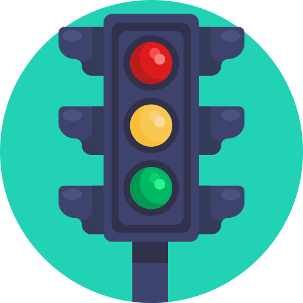

Understanding the Health Check Process
Step 1: Each performance area is evaluated on its own page.
Step 2: You'll choose a traffic light color to reflect current status.
Step 3: Indicate the trend — whether things are improving, stable, or worsening.
Step 4: Add comments and actionable ideas for improvement.
Step 5: Submit at the end to complete the health check.

Red — Getting worse
Yellow — Improving
Green — Stable
ü߆ This process helps your team reflect, assess, and identify what needs attention.
ü§ù Use the insights to foster transparency, accountability, and open dialogue.
✅ There are no right or wrong answers — just honest feedback and room to grow.